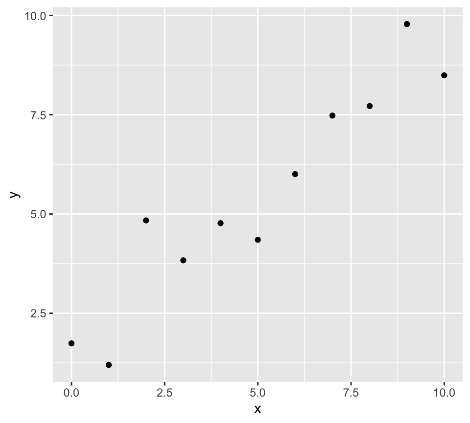

How to use those functions
Hector Roux de Bézieux
07 April , 2020
DailyHRB.RmdInstallation
You can install this pacakge from Github using
if (!"devtools" %in% installed.packages()) { install.pacakges("devtools") } devtools::install_github("HectorRDB/DailyHRB")
Alternatively, you can download it from Github and build it from source.
Templates
This package provide two templates that I regularly use. Templates are an RStudio functionality that I find very useful to speed up project creation. To use those templates, install the package then open RStudio.
- Rmd template: Click on New File (or the “+” button), select R Markdown… in the pulldown menu. Then, select From Template and select My Template (DailyHRB).
- Project Template: Click on _New Project (or the second “+” button), select New Project. Then, select Personal Project Template.
To create similar files for yourself, the easiest way is to create your own package. Then, create a Rmd file that you want as template and create a struture similar to the int folder of the Github repo.
For the project, it ia bit more complex. It relies on the project.R file in the R folder and some other files in inst. I hope to be able to create a tutorial at some point.
Functions
my_theme
I rely a lot on ggplot2 to quickly plot nice graphs but I don’t like the deaults themes. The one I prefer is the theme_classic but it still needed some improvements. So I build a ggplot2 theme.
p <- ggplot(data.frame(x = 0:10, y = 0:10 + rnorm(11)), aes(x = x, y = y)) + geom_point() p

p + my_theme()

ipak
This function loads the packages and install them from CRAN or Bioconductor if needed, using the BiocManager package.
## ggplot2 Biobase
## TRUE TRUEcheckType
This function is useful when analyzing micro-array data, RNA-Seq or scRNA-Seq data. It plots the boxplot of 10 (tunable) random columns from the input matrix. It allows to quickly see whether the data is logged and / or normalized when exploring a new dataset.

## 0% 25% 50% 75% 100%
## 0 0 1 2 7Clean
It is a function that I use to clean metadata file, typically from SRA. It removes all columns that only have one unique value, and optionaly all columns that have no value with duplicates.
metaData <- data.frame(SRA = "SRA17CJQ1", ID1 = sample(letters, 12, replace = F), group = c(rep("group1", 4), rep("group2", 4), rep("group3", 4))) metaData$ID2 <- toupper(metaData$ID1) metaData
## SRA ID1 group ID2
## 1 SRA17CJQ1 v group1 V
## 2 SRA17CJQ1 s group1 S
## 3 SRA17CJQ1 d group1 D
## 4 SRA17CJQ1 k group1 K
## 5 SRA17CJQ1 q group2 Q
## 6 SRA17CJQ1 u group2 U
## 7 SRA17CJQ1 e group2 E
## 8 SRA17CJQ1 o group2 O
## 9 SRA17CJQ1 t group3 T
## 10 SRA17CJQ1 a group3 A
## 11 SRA17CJQ1 n group3 N
## 12 SRA17CJQ1 c group3 Cclean(metaData)
## ID1 group ID2
## 1 v group1 V
## 2 s group1 S
## 3 d group1 D
## 4 k group1 K
## 5 q group2 Q
## 6 u group2 U
## 7 e group2 E
## 8 o group2 O
## 9 t group3 T
## 10 a group3 A
## 11 n group3 N
## 12 c group3 Cclean(metaData, unique = F, keep = "ID1")
## group ID1
## 1 group1 v
## 2 group1 s
## 3 group1 d
## 4 group1 k
## 5 group2 q
## 6 group2 u
## 7 group2 e
## 8 group2 o
## 9 group3 t
## 10 group3 a
## 11 group3 n
## 12 group3 c
colors
Just a shorcut, colors() is equivalent to RColorBrewer::display.brewer.all(). Setting print = TRUE will also print the names of all palettes in RColorBrewer.